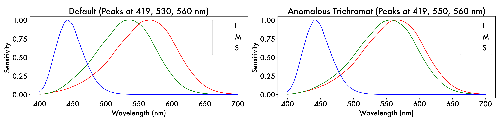
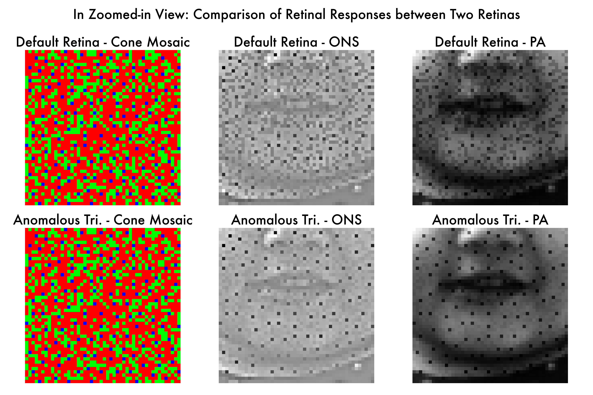
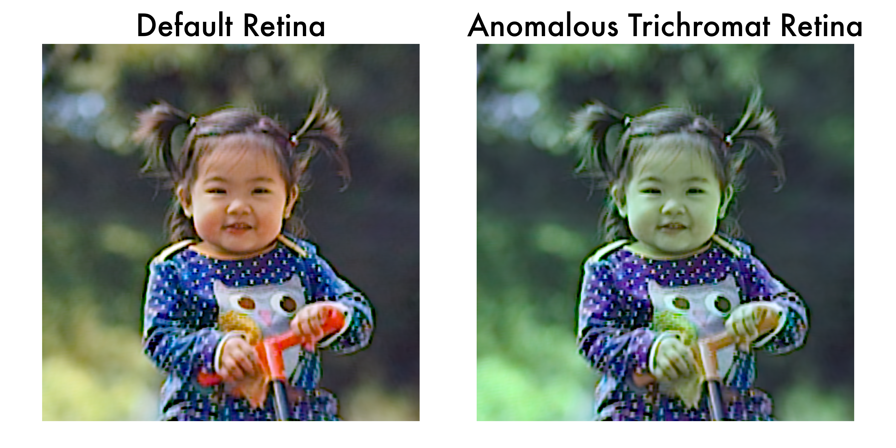

1. Simulation of anomalous trichromat
What is Anomalous Trichromat?
Anomalous trichromatism is a form of color vision deficiency where individuals possess three types of cone photoreceptors (L, M, and S cones), but the peak spectral sensitivities of one or more cone types are shifted from the typical values.
For instance, an individual with anomalous trichromacy may have an M cone with a peak sensitivity shifted towards longer wavelengths. Below is a comparison of cone fundamentals between a normal trichromat and an anomalous trichromat:

In this section, we demonstrate how to simulate the anomalous trichromat retina and compare its behavior to a normal trichromat retina.
1.1. Identify the Module to Customize
To simulate anomalous trichromacy, we need to modify the cone fundamentals—specifically, the sensitivity curves of the cones. This involves customizing the SpectralSampling module within the RetinaModel (located at: Simulated/Retina/SS_spectral_sampling)
Within this folder:
SS_Abstract.pydefines the abstract base classAbstractSpectralSampling, which governs spectral sampling.SS_Default.pydefines the default implementation,DefaultSpectralSampling.
To create a custom implementation, we need to define a new class inheriting from AbstractSpectralSampling. For demonstration, we’ve already provided an example class, CustomSpectralSampling, in the file SS_Custom.py. Here’s a snippet to illustrate the structure:
...imports...
from Simulated.Retina.SS_spectral_sampling import register_class
@register_class("Custom_Cone_Fundamentals")
class CustomSpectralSampling(AbstractSpectralSampling):
def __init__(self, params):
super(CustomSpectralSampling, self).__init__(params)
...rest of the code...
Key Points:
The
register_classfunction is defined in the__init__.pyfile of each module directory and is used to register the new class.The
@register_class("Custom_Cone_Fundamentals")decorator allows the new class to be referenced in the YAML configuration file.
Basically, by adding this simple decorator, you can easily direct the model to use your custom spectral sampling class from the YAML configuration file.
This format is general across the codebase, not just for this SS_spectral_sampling module but also for other modules, including the ones in the CortexModel. We will come back to this point in just a moment.
1.2. Define Your Configuration
Now let’s pause before implementing the full code of the CustomSpectralSampling class, and start working on the YAML configuration file.
As we identified, we would most likely end up modifying the SpectralSampling module in the RetinaModel. To control this from the YAML configuration file, here is one possible change you can make to the default YAML configuration file.
Default YAML Configuration
# (Before Change) Default Retinal model parameters
RetinaModel:
retina_spectral_sampling:
type: 'Default' # Spectral sampling strategy for the retina
cone_types: 'LMS' # Cone types in the retina mosaic
Modified YAML Configuration
# (After Change) Custom Retinal model parameters
RetinaModel:
retina_spectral_sampling:
type: 'Custom_Cone_Fundamentals' # Spectral sampling strategy for the retina
cone_types: 'LMS' # Cone types in the retina mosaic
cone_fundamentals:
L: 560 # Default L cone peaks at 560 nm
M: 550 # Shifting M cone peak to 550 nm from the default 530 nm
S: 419 # Default S cone peaks at 419 nm
The full example of the YAML configuration file can be found in the AnomalousTrichromat.yaml.
But the important comment here is that:
The
typefield is now set toCustom_Cone_Fundamentalsinstead ofDefault.The
cone_fundamentalsfield is now created to specify the peaks of the cone fundamentals.
Now, let’s revisit the CustomSpectralSampling class in the SS_Custom.py file.
...
...imports...
from Simulated.Retina.SS_spectral_sampling import register_class
@register_class("Custom_Cone_Fundamentals")
class CustomSpectralSampling(AbstractSpectralSampling):
def __init__(self, params):
super(CustomSpectralSampling, self).__init__(params)
# Defining custom cone fundamentals, using the parameters from the new YAML configuration file.
cone_fundamentals_params = params['RetinaModel']['retina_spectral_sampling']['cone_fundamentals']
cone_fundamental_peaks = list(cone_fundamentals_params.values())
cone_fundamentals = generate_cone_fundamentals_from_peak_frequencies(cone_fundamental_peaks)
self.cone_fundamentals = torch.FloatTensor(cone_fundamentals).to(DEVICE)
...rest of the code...
The decorator class name Custom_Cone_Fundamentals is indeed used in the type field in the YAML configuration file, and that is how the model knows which class to use for this spectral sampling module in the RetinaModel, and cone_fundamentals field is used to specify the peak frequencies of the cone fundamentals, and then passed to define the cone_fundamentals attribute in the CustomSpectralSampling class.
1.3. Run and analyze
Now, let’s instantiate two retina models, one with the default cone fundamentals and one with the custom cone fundamentals.
# Instantiating two retina models
from Simulated.Retina.RetinaModel import RetinaModel
# Load the default parameters for the trichromatic retina simulation
with open(f'{ROOT_DIR}/Experiment/Config/Default/LMS.yaml', 'r') as f:
default_params = yaml.safe_load(f)
retina_model_default = RetinaModel(default_params)
# Load the parameters for the anomalous trichromatic retina simulation
with open(f'{ROOT_DIR}/Tutorials/03_CustomSimulation/Config/AnomalousTrichromat.yaml', 'r') as f:
anomalous_trichromat_params = yaml.safe_load(f)
retina_model_anomalous = RetinaModel(anomalous_trichromat_params)
If we compare the retinal responses of the two models, we can clearly see the difference in their responses.

For the anomalous trichromat retina, the difference between L and M cones is more nuanced than the default trichromat retina, which makes total sense given aggressive overlap of M cone sensitivity curve with L cone sensitivity curve.
1.4. Further analysis (Optional)
This is an optional section, but we would like to show you how to further analyze the results of the simulation.
Given two retina models, as well as the trained cortex model with one of the retina models, we can simulate the perception of the stimulus with the other retina model. Intuitively, we can simulate what the normal trichromat person would see if they suddenly became anomalous trichromat.
Let’s load the trained cortex model and generate two internal percepts, generated from two optic nerve signals simulated by two different retina models.
# Load the default cortex model
from Simulated.Cortex.CortexModel import CortexModel
cortex_model_default = CortexModel(default_params).to(DEVICE)
cortex_model_default = torch.compile(cortex_model_default)
# load the pre-trained weights
cortex_model_default.load_state_dict(torch.load(f'{ROOT_DIR}/Experiment/LearnedWeights/LMS/100000.pt', weights_only=True, map_location=DEVICE))
# get the internal percepts for the ons simulated by the default trichromat retina
with torch.no_grad():
default_warped_internal_percept = cortex_model_default.decode(optic_nerve_signals_default[:,:1])
default_warped_internal_percept_linsRGB = cortex_model_default.ns_ip.forward(default_warped_internal_percept)
default_warped_internal_percept_sRGB = retina_model_default.CST.linsRGB_to_sRGB(default_warped_internal_percept_linsRGB)
default_internal_percept_sRGB = get_unwarped_percept(default_warped_internal_percept_sRGB, cortex_model_default)
# get the internal percepts for the ons simulated by the anomalous trichromat retina
with torch.no_grad():
anomalous_warped_internal_percept = cortex_model_default.decode(optic_nerve_signals_anomalous[:,:1])
anomalous_warped_internal_percept_linsRGB = cortex_model_default.ns_ip.forward(anomalous_warped_internal_percept)
anomalous_warped_internal_percept_sRGB = retina_model_default.CST.linsRGB_to_sRGB(anomalous_warped_internal_percept_linsRGB)
anomalous_internal_percept_sRGB = get_unwarped_percept(anomalous_warped_internal_percept_sRGB, cortex_model_default)
And here is the comparison of the two internal percepts.

We would not put too much emphasis on the difference between the two internal percepts, as there are many factors that could affect the difference, but this is a good example to show how we can actually simulate the perception of a new coming stimulus.